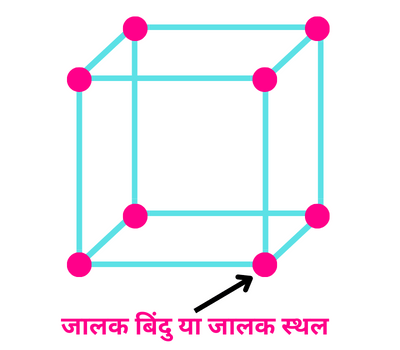

क्रिस्टल जालक का सम्पूर्ण ज्ञान |
किसी क्रिस्टल मे अवयवी कणों को बिंदु रूप से प्रदर्शित कर उन्हें सीधी रेखा मे मिलाने पर जिस त्रिविमीय संरचना का निर्माण होता है उसे ही क्रिस्टल जालक कहते है |
हम जानते है की कोई भी क्रिस्टल अवयवी कणों से मिलकर बना होता है ये अवयवी कण परमाणु , अणु अथवा आयन हो सकते है इन अवयवी कणों को बिंदु द्वारा दर्शाकर उन्हें सीधी रेखा मे मिलाने पर क्रिस्टल जालक बनता है इसका उपयोग ठोस की आकृति , उसके अवयवी कणों की व्यवस्था की प्रकृति के बारे मे जानकारी प्राप्त करने के लिए होता है |
जालक कण क्या है ?
कोई क्रिस्टल जालक जिन अवयवी कणों से मिलकर बने होते है, उन्हें ही जालक कण कहते है |
उदाहरण - परमाणु, अणु अथवा आयन |
जालक बिंदु या जालक स्थल क्या है ?
जालक कणों को क्रिस्टल जालक मे बिंदु रूप से प्रदर्शीत किया जाता है इसे ही जालक बिंदु या जालक स्थल कहते है अर्थात क्रिस्टल जालक मे अवयवी कणों को बिंदु द्वारा दर्शाया जाता है उस बिंदु को ही जालक बिंदु या जालक स्थल कहते है |
